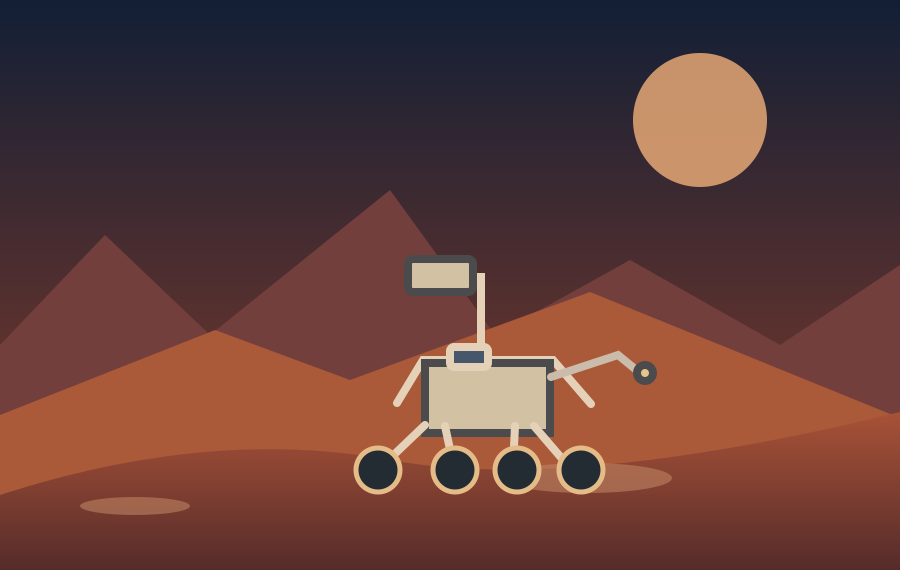
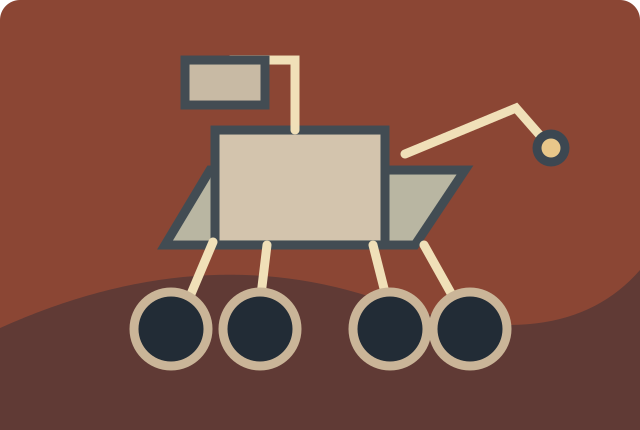

Follow the water
Spirit and Opportunity investigated evidence of ancient water and explored landscapes on opposite sides of Mars.
NASA mission profileFrom the first long-distance rovers to modern mobile science laboratories, NASA's Mars missions help scientists read the planet's history one rock at a time.
Explore the missions
Rovers study rocks, soils and the atmosphere directly. Their instruments help answer questions about ancient water, habitability and how Mars changed over time.
Spirit and Opportunity investigated evidence of ancient water and explored landscapes on opposite sides of Mars.
NASA mission profileCuriosity analyzes rocks and minerals in Gale Crater to assess whether ancient Mars could have supported microbial life.
NASA mission profilePerseverance explores Jezero Crater, searches for signs of ancient microbial life and stores selected samples for possible future return.
NASA mission profile
Mars rovers combine cameras, onboard computers, specialized instruments and rugged mobility systems to investigate places no human has visited.
Explore how these missions built on earlier discoveries in the mission history, or find answers to common questions in the FAQ.